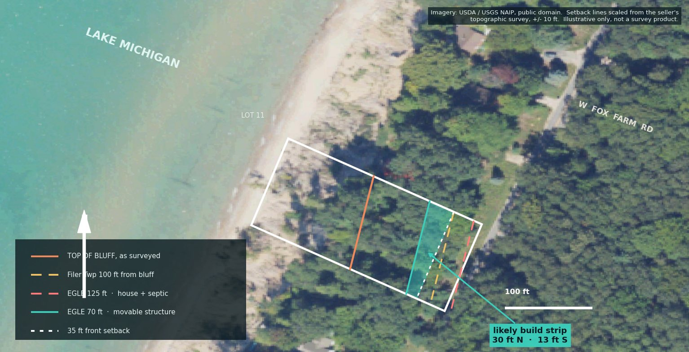
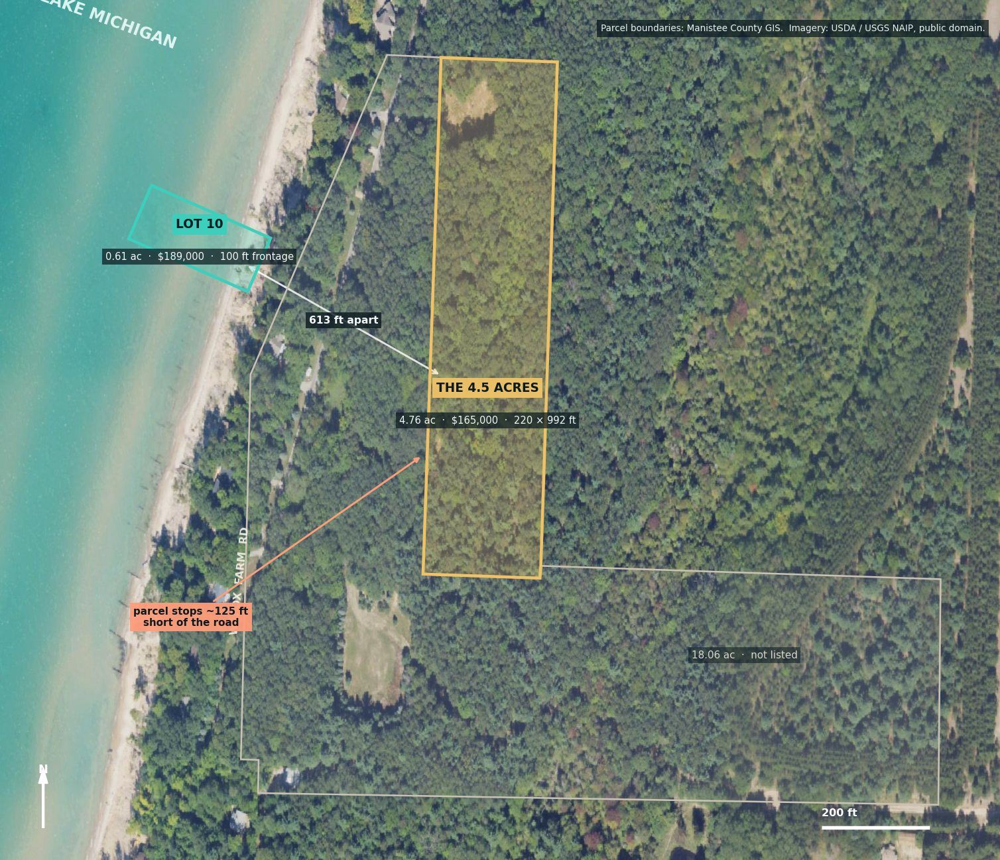

Manistee County, Michigan · September 2026
A hundred feet of Lake Michigan frontage, eighty feet up. What the public record says before you settle on a price.
It is a genuinely good piece of shoreline, and it is buildable in one particular way rather than any way. The parcel sits inside a designated high-risk erosion area, which pushes structures back from the bluff, and the surveyed bluff crest is far enough inland that the room left over suits a compact, movable design near the road rather than a conventional house on a basement.
Three questions decide it: whether the township grants the variance its own ordinance contemplates for lots like this, where the septic system can legally go, and, for the barn, whether the acreage across the road clears the five-acre threshold its district appears to set. All three are answerable in writing, by named offices, before you make an offer. Everything below is in service of asking them well.
This is the whole question in one picture. The ground profile is USGS elevation data along the lot's centerline. The vertical rules are the regulatory lines, each measured landward from the surveyed top of bluff.
EGLE's Filer Township high-risk erosion schedule, designated December 1993, lists parcel 51-06-421-702-09 in Area A1 at a recession rate of 1.8 ft/yr, with a 30-year projected recession distance of 70 ft and a 60-year distance of 125 ft. Both are measured landward from the erosion hazard line, in practice the bluff crest. Every structure needs an EGLE permit under Part 323. This is a designation the whole row carries, not a defect unique to this lot.
Filer Township zoning section 31.10.1031 sets a 100 ft setback from the bluff line along the entire Lake Michigan shoreline, and writes it as a moving line: as the bluff recedes, the setback recedes with it. The same section carries a variance for parcels platted before the 1993 designation that lack the depth to comply, which describes this lot exactly. The conditions are movable construction, septic landward of the house, and never closer to the bluff than the EGLE line or 50 ft, whichever is greater.
A conventional drainfield sits landward of the 60-year line, which on this lot is about where the road is. District Health Department #10 also needs room for a tank, a field, and well isolation. The plausible answers are an engineered or alternative system with a small footprint, a holding tank, or a drainfield on a separate parcel by recorded easement. Health departments and EGLE field offices answer this kind of question as a matter of routine. Get it in writing first, not after.
Filer Township section 31.10.1070.A reads: “All accessory buildings shall be built after construction of the main building on the same parcel.” A barn cannot go up on a parcel with no house on it, and a cottage here does not unlock one 600 ft away. Lot 10 also has no room for a barn once the setbacks are drawn. The 4.5 acres listed nearby is the natural answer, and it carries a five-acre threshold and an access question of its own. The barn parcel is worked through below.
Lakeland Recreation Association dues run $350 a year, due June 15, with capital assessments levied per lot. The beach is gated by personal code, running from Medicine Creek to the jetties north of the clubhouse. Short-term renters lost beach access in 2018, which keeps it calm. There is a clubhouse, a boathouse with winter boat storage, tennis and pickleball, and roughly 140 acres of association woodland with trails. Owners may camp on their own lot during construction and use the clubhouse showers, which is a real convenience during a build. Nothing in the posted bylaws imposes architectural review or a minimum house size, so the township looks like the design gate rather than the association. Worth confirming with the board.
Three vacant sales on the same row: $190,000 in September 2023, $185,000 in June 2025, and this lot at $170,000 in January 2026. The $189,000 ask sits at the top of that band rather than outside it. Set the assessed value aside: the county carries an SEV implying a $333,000 true cash value, well above three actual transactions. Improved houses give the upside: the four-bedroom next door sold for $310,000 in 2020 and is asking $750,000 today, and the county carries the two large houses at the north end between $1.3M and $1.4M.
County records show a sale on 1/21/2026 at $170,000, relisted 9/2/2026 at $189,000 with “substantial preliminary site work and planning already completed.” From the listing photos that includes the topographic survey, some tree clearing, and a two-story farmhouse concept. The concept is a rendering rather than a site plan, and the site will drive the design. The useful ask is for the rest of the survey set (the sheet in the listing is labelled TO, so there are others) and for any EGLE or health department correspondence. An existing determination letter or soil evaluation takes real risk off the table and is worth paying for.

This is the other half of the plan and it deserves its own look. The 4.5 acres listed at $165,000 sits 613 ft from Lot 10, not the mile the listing copy implies, so the two really are a pair. Three things decide whether a barn can go on it, and none of them is the barn.

Under Agricultural Residential, a single-family dwelling and any structure accessory to it is permitted only “on a parcel having a lot area of five acres or more” (section 31.37.3702.A), with a five-acre minimum lot area to match (31.37.3704.A). The deed calls this parcel 4.50 acres more or less; county GIS measures 4.76. Either figure is under the line. Under Forest Recreational the minimums are 10 acres and 297 ft of width, and the parcel is 220 ft wide, so it misses on both counts. Under Medium Density Residential the standards are 20,000 sq ft and 100 ft of width, which it clears comfortably. Which district applies decides whether a house, and therefore a barn, is possible at all. The township's zoning map is not published online, so this is a question for the zoning administrator rather than something to infer.
County GIS puts the parcel's nearest corner roughly 125 ft east of the W Fox Farm Road centerline, with the neighbouring 18-acre parcel filling the gap. Road centerlines and parcel lines both carry some error, but a 66 ft right of way would only account for about 33 ft of it, so the gap looks real. That matters twice over. The Agricultural Residential width standard is written as 208 ft “provided it fronts on a public street or highway,” and a parcel reached only by easement is a title question before it is a zoning one. It is also the most likely reason the listing has sat 190 days. Ask for the title commitment and read the access easement the way you would read any other: recorded, appurtenant to the parcel rather than personal to the seller, perpetual, and wide enough for construction traffic.
The listing describes association amenities, and the Lakeland bylaws attach membership to land formerly owned by the original platter, provided the parcel is no smaller than the smallest platted lot in Lakeland I and II. At 4.76 acres it clears that size test easily, so membership is plausible. It is still a question for the board rather than an assumption, because on the configuration where the house goes inland, association beach access is the entire waterfront case.
| Path | What it takes | Who decides |
|---|---|---|
| Confirm the district | If Medium Density Residential applies rather than Agricultural Residential, the parcel already clears the lot area and width standards and the question evaporates | Zoning administrator |
| Buy a quarter acre | A lot line adjustment taking about 0.25 ac from the adjoining 18-acre parcel lifts it over five acres, which also fixes the road frontage if the strip is taken on the west side | The neighbour, then the township |
| Nail down access | A recorded, appurtenant easement across the intervening land, or evidence that frontage exists after all | Title company |
| Put the house here | Build the dwelling on the acreage instead of the bluff, which removes the erosion setback, the bluff variance and the septic squeeze in one move, and leaves room for the barn | Chris |
| Configuration | Land | What you get | What you give up |
|---|---|---|---|
| Lot 10 alone | $189,000 | Private Lake Michigan frontage and a compact movable cottage under the township variance | No barn, and a small footprint on a rolling setback |
| The acreage alone | $165,000 | Room for a house and a barn, ordinary septic, no erosion rules, beach by association membership | Private frontage, and only if the five-acre and access questions clear |
| Both | $354,000 | Frontage cottage on the bluff plus an inland house and barn | Two dwellings and two builds, since the barn needs a principal building on its own parcel |
The configuration worth thinking hardest about is the middle one, because it is the cheapest, it removes every constraint that makes Lot 10 difficult, and it still puts you inside the association with a gated beach a few minutes' walk away. What it does not give you is your own frontage, and that is the thing only Lot 10 has. If frontage is the point, the third row is the real plan and the barn is a second project rather than a companion to the cottage.
Ranked the way any asset should be: what the market actually paid, then what the thing produces, and not the assessor's number.
| Frame | What it assumes | Rough value |
|---|---|---|
| Hold as beach and view | Association membership and private bluff frontage, no structure ever. Anchored on the non-lake Lakeland lots, which sold between $47,000 and $75,000 in 2020 with membership but no frontage, plus something real for 100 ft of private beach. | $75k – $110k downside case |
| Market clearing, as is | The three vacant sales on this row since 2023. Those buyers priced in some path to build. | $170k – $190k observed |
| Residual, variance path works | A movable cottage of 1,200 to 1,500 sq ft on pilings in the strip, with an engineered or off-lot septic. Finished value anchored on the two smaller houses on the row at $425,000 and $750,000, call it $450,000 to $550,000, less a bluff-lot build at $350,000 to $450,000. | $50k – $150k before permitting |
The residual frame is the one to carry into a negotiation, because the row's clearing price already assumes the variance and the septic answer both come through. Two things worth designing around: the setback rolls, so at 1.8 ft a year the crest moves about 18 ft a decade and a movable house should be sited as far landward as the strip allows and genuinely be movable. And expect a neighbor in the bidding, since the adjacent lots gain privacy and view protection by owning it.
Structure beats a low number here. Offer near the row's clearing price, contingent on three written approvals inside 120 days: the township variance for a readily movable structure, an EGLE Part 323 permit, and a health department septic approval. If all three land, you own a permitted Lake Michigan lot at a fair price. If any one fails, you walk with your deposit. The seller's own survey is the exhibit that justifies the contingencies, and a seller who has already done site work should not object to them.
| Question | Who | What to ask for |
|---|---|---|
| Where can a structure sit | EGLE Water Resources, Cadillac district office Great Lakes Shorelands Unit | A written high-risk erosion determination for parcel 06-421-702-09, and what a Part 323 permit requires for a movable structure |
| Will the variance be granted | Robert Hall, Filer Township Zoning Administrator (231) 723-3138 ext. 6, Mon & Thu | How section 31.10.1031's pre-1993 variance has been applied on this shoreline; and the district for the 4.5 acres, plus whether the five-acre threshold or the road frontage can be waived |
| Where can the septic go | District Health Department #10, Manistee office | A soil evaluation and whether an engineered, holding-tank, or off-lot easement system is approvable here |
| What has already been done | Listing agent | The full survey set, any EGLE or health department correspondence, and any prior land use permit application |
The general material, which applies to any northern Michigan waterfront purchase rather than this parcel. Open what is useful.
Land and parcel. The county GIS parcel viewer carries parcels, contours, wetlands, and aerials together, which is where you see whether the buildable part of a lot is where the listing implies. BS&A county assessing records give the parcel card, sales history, and true cash value, though the roll year matters and a stale roll can sit a long way from the current one. The Register of Deeds holds the plat and every recorded easement, which is what tells you whether a common beach is a plat dedication, an association parcel, or a private easement, and therefore whether it can ever be sold out from under you.
Water, wetlands, environment. The Fish and Wildlife Service National Wetlands Inventory and EGLE's wetlands viewer both map regulated ground, and either hit means budgeting for a formal delineation before siting a septic field. FEMA's flood map takes two minutes. EGLE's MiEnviro site map explorer and RIDE mapper cover contaminated sites, leaking underground tanks, and open enforcement within a radius of an address, which is worth running on any lot near old agricultural land. Wellogic holds Michigan's water-well records, so the neighbors' logs give you depth, casing, and yield before you own anything.
Shoreline specifically. EGLE publishes high-risk erosion area and critical dune area maps, both queryable parcel by parcel through the open-data feature service or the township PDF schedules. The Army Corps Detroit District keeps the long-run Lake Michigan and Huron water level record, which is what you design a setback and a stairway against. Google Earth Pro's desktop version, which is free, scrubs historical imagery back twenty years, and on a bluff lot that is the single most useful check available: where the crest and the beach sat in 2013 at low water against 2020 at the record high.
Market. Keep a saved search wide and unfiltered so nothing is hidden, then triage by hand, because listing sites cannot show road proximity, lot shape, true frontage against a bluff view, or condition. Staleness usually signals a flaw in one of those rather than a negotiation discount. Keep a plain table of closed sales with list price, cuts, days on market, and sale-to-list, and anchor every offer to those rather than to asks.
Rural Michigan, empty most of the year, well and septic and a sump pump. What holds up:
Three rules. Turn on device-offline alerts, because silence reads as all-is-well and usually is not. Keep safety alerts in a separate loud channel from camera motion, or you will mute the app. And your backstop should be a different vendor on a different network from your primary. Once on the first trip and once a year after: kill the main breaker, watch the generator start, confirm the sump runs on generator power, trip a sensor, and confirm the message lands on two phones. That chain is the actual product.
Check cell signal at the lot before buying anything carrier-locked. Verizon is usually the stronger rural Michigan carrier, and an alarm on the wrong network is a paperweight that also supplies false confidence.